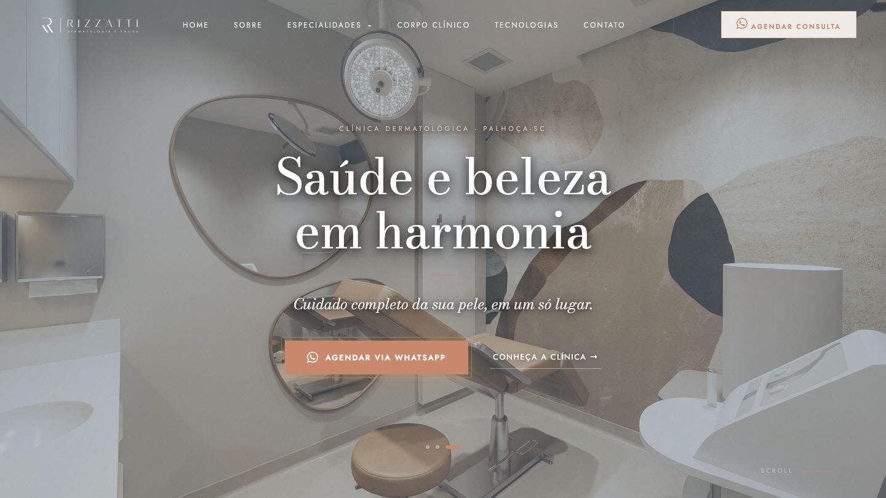
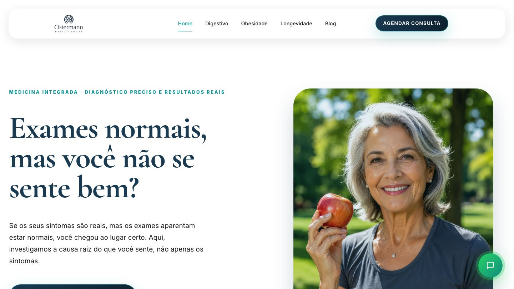

Sites com propósito.Estratégia por trásde cada clique.
Cada site nasce com um objetivo claro — design e tráfego pago
trabalhando juntos, não só pra existir. O que construo entrega
resultado: rápido, direcionado e mensurável.
CASES
Cases
01
UP! Especialidades Pediátricas
Web / Pediatria · 2025

02
Rizzatti Dermatologia e Saúde
Web / Dermatologia · 2025
03
SULCARDIO Clínica Cardiológica
Web / Cardiologia · 2025

04
Ostermann Medical Center
Web / Saúde Integrativa · 2025
TRÁFEGO PAGO
Não gerencio anúncio. Gerencio resultado.
01
Gestão de Tráfego Pago
Campanhas no Meta Ads e Google Ads com acompanhamento e
otimização contínua — não é subir anúncio e torcer.
02
Landing Pages de Alta Conversão
Landing page no ar em até 7 dias, otimizada pra SEO e pronta pra
conversão desde o primeiro clique.
03
Sites Completos
Do zero, design e código, construídos pra sustentar a campanha,
não só existir.
04
Sistemas de Integração com Meta
Sistemas internos pra agências e clínicas que conectam com a API
de Conversões da Meta, enviando os dados de lead direto do
servidor — mais precisão que o pixel sozinho, e um painel interno
centralizando os resultados.
SEO otimizado
Mapa de calor
Pixel configurado
7 dias no ar
Performance orgânica
0Clientes atendidos
0Investido em mídia
0
Campanhas ativas
PROVAS
Os números vieram do gerenciador. Não do meu texto.
Prints direto do Meta Ads e do Google Ads, sem edição. Clique no
print para ver em tamanho cheio.
01Meta AdsDermatologia · Maceió/AL1 ago — 3 set 2026
Ticket alto exige público certo, não público grande
113Conversas iniciadas
R$ 6,09Por conversa
1.318Visitas ao perfil
2,40%CTR
Clínica focada em blefaroplastia — procedimento de ticket
elevado, que pede alcance qualificado em vez de volume. Um mês
de alinhamento contínuo com a secretária refinou a segmentação
até chegar a 113 conversas a R$ 6,09, com
agendamento efetivo na ponta. Quem atende o lead enxerga o que
o gerenciador não mostra.
02Meta AdsCirurgia Plástica · Criciúma/SC1 — 31 ago 2026
Contato e autoridade num nicho sob restrição constante
67Contatos (62 novos)
3.729Cliques no link
R$ 0,25Por clique
3,72%CTR
Duas frentes rodando em paralelo para Criciúma e região:
geração de contato e tráfego para perfil.
3.729 cliques a R$ 0,25 e
67 contatos, 62 deles novos. O
acompanhamento é feito em planilha com a secretária, e os
criativos são orientados para que a Meta os classifique como
conteúdo médico — evitando as restrições por nudez que travam
esse nicho.
03Meta AdsDermatologia · Criciúma/SC1 — 31 ago 2026
Marca consolidada há 25 anos, convertida em agenda
74Conversas iniciadas
4.100Visitas ao perfil
R$ 0,27Por visita ao perfil
5,39%CTR (perfil)
Mais de 25 anos de atuação na cidade: a marca já tem
reconhecimento, e a campanha foi desenhada para capitalizar
isso. 4.100 visitas ao perfil a R$ 0,27 e
74 conversas iniciadas no mês, com CTR de
5,39%. Volume de agendamento constante e público alinhado ao
posicionamento da clínica.
04Meta AdsDermatologia · Criciúma/SC1 — 31 ago 2026
O lead entrava em contato e sumia. Diagnóstico antes de verba.
64Conversas iniciadas
2.137Visitas ao perfil
R$ 0,27Por visita ao perfil
139Seguidores novos
A clínica relatava leads que iniciavam contato e não
retornavam. Em vez de ampliar investimento, investiguei a causa
e reajustei a campanha a partir dela. Resultado:
64 conversas e
2.137 visitas ao perfil a R$ 0,27, com 139
seguidores novos — audiência que passa a alimentar as campanhas
seguintes.
05Meta AdsE-commerce de alto ticket1 — 31 jul 2026
Quando o conteúdo sustenta a marca, o destino é o perfil
820Seguidores novos
38.671Pessoas alcançadas
4,45%CTR
R$ 854Investido no mês
Marca de alto ticket com site em produção que optou por
concentrar a verba em tráfego para perfil — decisão coerente
com um conteúdo forte e uma audiência engajada.
R$ 853,87 no mês geraram
38.671 pessoas alcançadas, CTR de 4,45% e 820
seguidores novos. Perfil bem alimentado converte melhor que
página genérica.
06Google AdsCardiologia · Içara/SC1 — 31 ago 2026
De 33 para 101 conversões em um mês
101Conversões no mês
+68vs. mês anterior
4.748Impressões
R$ 1.069Investido no mês
Clínica com mais de 15 anos de história em Içara. Em cidade
pequena, o reconhecimento da marca encurta o caminho até a
decisão — e a campanha de pesquisa aproveita exatamente esse
momento, aparecendo quando a busca já existe. As conversões
saltaram de 33 para 101 no mês, com R$ 1.069,21
investidos.
07Google AdsOftalmologia · Criciúma/SC1 — 31 ago 2026
Menos leads, mais consultas: a qualificação virou o projeto
59Conversões no mês
R$ 14,32Por conversão
2Páginas de venda criadas
R$ 845Investido no mês
A cliente relatava leads que não fechavam consulta. Ajustes de
público não resolveram, então construí duas páginas de vendas
dedicadas aos procedimentos prioritários — olho seco e cirurgia
refrativa — para qualificar antes do contato. O volume caiu
para 59 conversões a R$ 14,32, e era esse o
objetivo: menos lead, mais consulta marcada.
Gestor de tráfego não entrega só anúncio ou site. Ele se envolve no
negócio do cliente, mergulha no contexto para tomar a decisão certa
e entrega solução — não relatório.
Lucas Bithencourt
SOBRE
Lucas Bithencourt Florencio
Comecei cedo — vídeo game me levou pra tecnologia, tecnologia me
levou pra internet. Fiz técnico em Informática no CEDUP Abílio
Paulo, onde aprendi a programar e descobri que design não é enfeite:
é lógica aplicada. Migrei pra social media — posts, outdoor, flyer,
pôster. Em 2022 entrei numa imobiliária pra tocar o marketing deles
e aprendi, na prática, a lógica por trás de cada peça. 2025 foi o
ponto de virada: entrei na agência FEMO e passei a unir tudo —
social media, captação externa, roteiro, tráfego pago e
desenvolvimento — num só ofício. Hoje trabalho com tráfego pago e
crio sites e sistemas que convertem.
Sites assertivos. Tráfego previsível. Estratégia bem direcionada.
Técnico em Informática — CEDUP Abílio Paulo
Tráfego Pago — SATC
Publicidade e Propaganda — SATC (em andamento)
Marketing Digital — curso online
Formação prática — Triplo X (aulas com gestores de tráfego e desenvolvedores, parceria Blueberry)